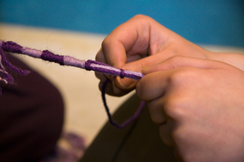
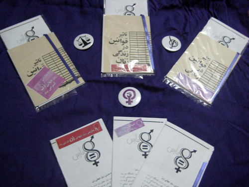
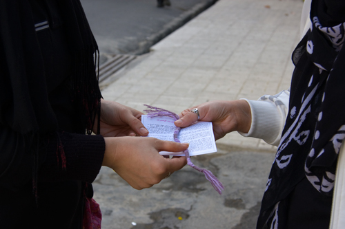

|
|

هشت مارس و دستبندهای بنفش
دو شنبه17 اسفند 1388
نزدیک به صد سال از اولین سالی که هشت مارس از سوی فعالان حقوق زنان به عنوان روز جهانی زن برگزیده شد می گذرد. در این صد سال زنان مبارزات بسیاری نمودند و این مبارزات اگرچه همواره با سرکوب روبرو شده اما دستاوردهایی را نیز برای زنان به همراه داشته است.
در ایران نیز برگزاری مراسم بزرگداشت روز جهانی زن تاریخچه ای طولانی دارد و زنان ایرانی نیز سالهاست که روز هشتم ماه مارس (17 اسفند) را به عنوان روز جهانی زن جشن می گیرند. در سالهای اخیر فعالین حقوق زن مراسم هایی را به مناسبت این روز برگزار نمودند که بخشی از آنها در پارکها و بخشی دیگر نیز به دلیل سرکوب حرکتهای زنان در منازل مسکونی برگزار گردیده است. در این سالها مراسم های هشت مارس عمدتا با پخش بروشور, دفترچه, کارت تبریک و ... به منظور آگاهی رسانی به مردم همراه بوده است. امسال نیز علیرغم محدودیتهای بسیار در ماههای اخیر و فشاری که از هر طرف بر فعالین اجتماعی وارد می گردد, فعالین حقوق زنان که چندین سال است این روز را به هر شکل ممکن با حضور در خیابانها و در کنار مردم گرامی می دارند با ابتکاری جدید در آستانه هشت مارس برای آگاهی رسانی به مردم و بزرگداشت روز جهانی زن به خیابانها رفتند.

امسال به همت جمعی از فعالان کمپین یک میلیون امضا دستبندهایی به رنگ بنفش که نمادی برای مبارزه زنان به شمار می آید به همراه کتابچه های کمپین یک میلیون امضا و همچنین برشوری در رابطه با روز جهانی زن در مناطق مختلف تهران از جمله دانشگاهها, خیابانها, مراکز خرید و رستورانها و کافه ها توزیع گردید. این دستبند ها می تواند همواره یادآور مبارزات زنان ایران برای دستیابی به حقوق برابر باشد.

در ماههای اخیر استفاده از نمادهایی که یادآور یک حرکت مشترک در بین مردم است به آنها کمک نموده تا همدلی بیشتری با یکدیگر پیدا کنند و به یاد داشته باشند که برای دستیابی به هدفی مشترک در حال مبارزه هستند. دستبندهای بنفش برای همبستگی با جنبش زنان ایران نیز می تواند نمادی از همدلی و همبستگی مردم با حرکتی باشد که سالهاست برای دستیابی به حقوق برابر تلاش می کنند. یکی از فعالین حقوق زنان که در روزهای نزدیک به هشت مارس اقدام به پخش دستبندهای بنفش, دفترچه کمپین یک میلیون امضا و بروشور روز جهانی زن نموده است می گوید: "استقبال مردم از این دستبندها بسیار خوب بوده است". یکی دیگر از فعالان معتقد است که مردم به محض دریافت این دستبندها آن را به دستان خود بسته و می گفتند حتما برای دوستان خود توضیح خواهند داد که این دستبند نماد چیست. یکی از اعضای کمپین یک میلیون امضا می گوید: "استقبال از دستبندهای بنفش, محدود به دختران نبوده و پسران بسیاری نیز مشتاق به بستن دستبند های بنفش بوده اند". فرد دیگری از اعضای کمپین یک میلیون امضا اضافه می کند که برخی وقتی دستبندها و بروشورها را می گرفتند می پرسیدند که چطور می توانند در جهت دستیابی به حقوق برابر فعالیت بیشتری نمایند؟

استقبالی که در این روزها فعالین کمپین یک میلیون امضا شاهد آن بودند نشان می دهد که اگرچه در این سالها فشار بسیاری بر آنها وارد شده و بسیاری از آنان دستگیر و زندانی شده اند و گاه احکامی نیز برای آنان صادر گردیده, اما صدای آنان و پیام آنان به خوبی به گوش مردم رسیده است.